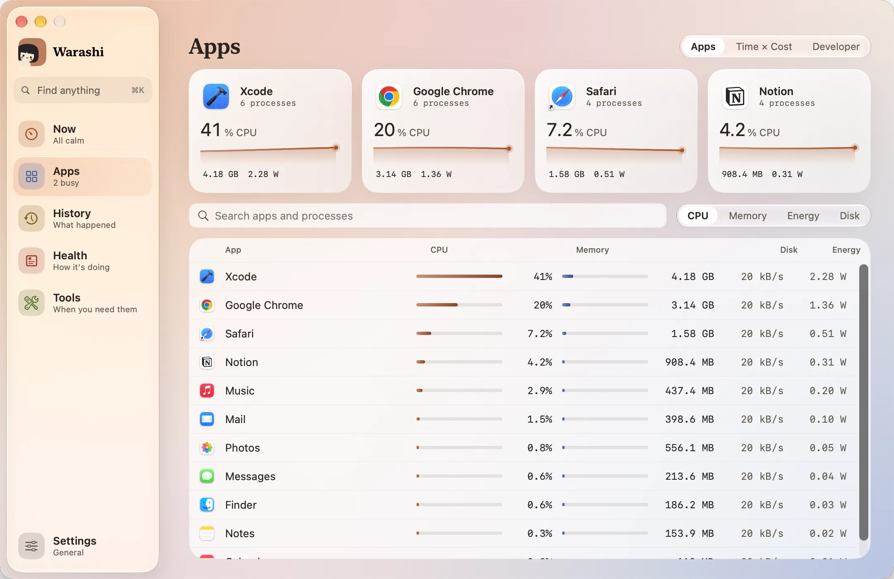
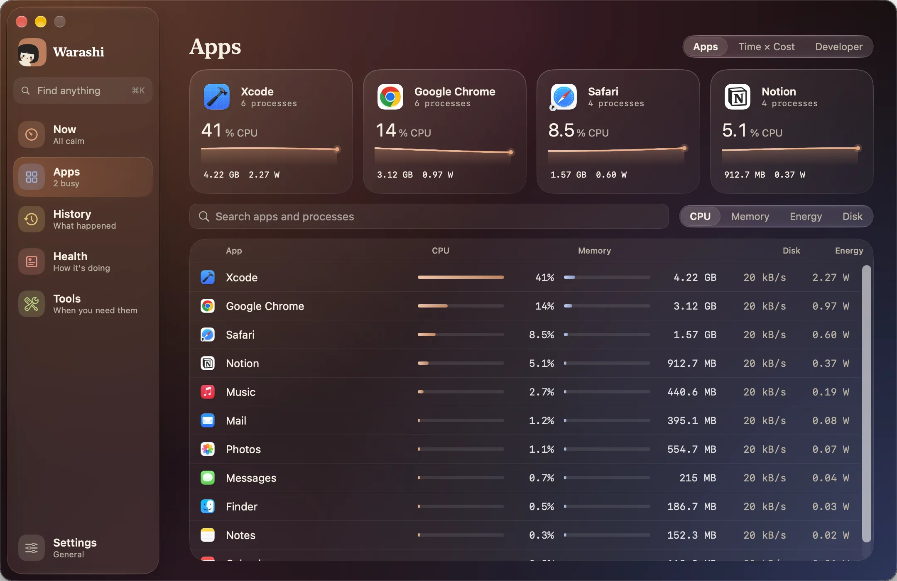
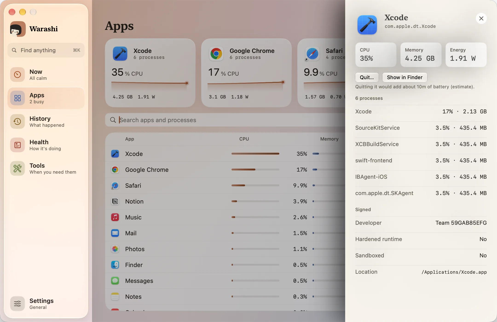
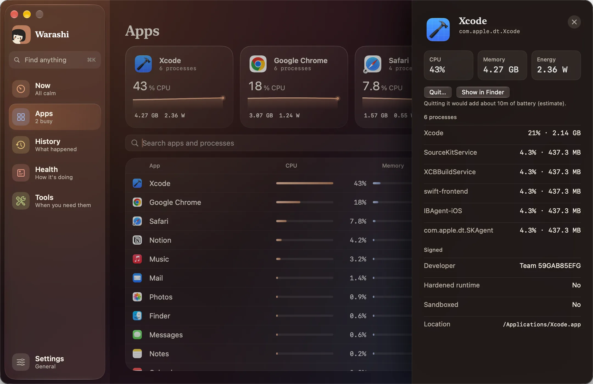

App menunjukkan seberapa besar beban tiap app saat ini, dengan proses pendukungnya dikelompokkan di bawahnya (jadi Chrome hanya satu baris, bukan dua puluh).
- Buka App
Pilih App di bilah samping atau tekan ⌘2. Empat app tersibuk berada di atas sebagai kartu dengan data semenit terakhir; urutannya hanya bertukar saat peringkat benar-benar berubah.


- Cari atau urutkan
Ketik di Cari app dan proses untuk menemukan app atau proses menurut namanya. Gunakan CPU, Memori, Energi, dan Disk untuk mengurutkan daftar.
- Buka laci sebuah app
Klik sebuah app. Lacinya menampilkan CPU, memori, dan energi, setiap proses yang dijalankannya, siapa yang menandatanganinya (Apple, tim pengembang, atau ad hoc), apakah memakai hardened runtime, dan lokasinya di disk.
Tampilkan di Finder membawa Anda ke sana. Saat memakai baterai, satu baris memperkirakan berapa banyak waktu yang akan bertambah jika ia ditutup.


- Keluar dari sebuah app
Klik kanan sebuah app di daftar atau salah satu kartu dan pilih Keluar…, atau tekan Keluar… di lacinya, lalu konfirmasi. App ditutup dengan cara biasa, jadi ia bisa meminta Anda menyimpan pekerjaan.
Jika masih terbuka beberapa detik kemudian, mungkin menunggu lembar simpan, laci akan memberi tahu dan menawarkan Paksa Keluar…. Warashi bertanya sekali lagi, lalu langsung menghentikan app: apa pun yang belum disimpan di dalamnya akan hilang.
- Lihat satu proses
Klik proses di laci untuk melihat cara proses itu dimulai: baris perintah, induk, pengguna, waktu mulai, dan tugas peluncuran. Tekan Escape atau klik di luar untuk menutup laci.
- Keluar dari satu proses
Klik kanan sebuah proses di laci dan pilih Keluar dari Proses… untuk menghentikan yang itu saja, misalnya tab browser yang menghabiskan memori. Jika tidak berhenti, Paksa Keluar Proses… akan menggantikannya.
Mengapa saya tidak bisa keluar dari beberapa app?
Warashi tidak menawarkan Keluar untuk bagian macOS, seperti Finder, Dock, dan WindowServer, untuk proses milik sistem atau pengguna lain, atau untuk dirinya sendiri: keluar dari Warashi dengan ⋯ › Keluar dari Warashi di jendela bar menu. Laci menjelaskan alasannya, bukan menampilkan tombolnya.
Program yang Anda mulai dari terminal tercantum di bawah app atau alat yang memulainya, sehingga keluar dari baris itu menghentikan semuanya. Untuk menghentikan satu saja, buka laci dan gunakan Keluar dari Proses….
Mengapa Warashi ada di daftar?
Karena Warashi jujur. Warashi mengukur dirinya sendiri seperti app lain dan menampilkan hasilnya, dengan label jendela ini: saat jendelanya terbuka, angka langsung digambar ulang sehingga memakai beberapa persen dari satu core, dan turun lagi menjadi sebagian kecil dari satu persen saat Anda menutupnya. Warashi tidak pernah muncul di kartu app tersibuk atau peringkat jendela bar menu, jadi jendelanya sendiri tidak akan terlihat seperti biang masalah.